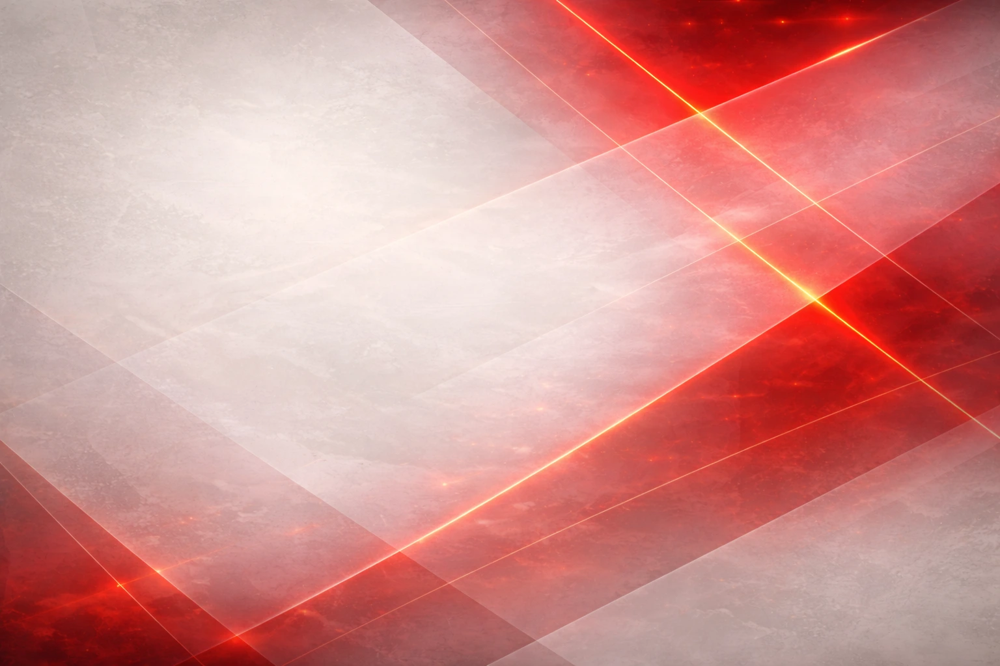

Nuskara
08 — Visual Effects & Interactions
Section 08
Visual Effects & Interactions
Efek visual yang memperkuat kesan "Designed" dan institutional authority.
Hero Overlay (hero-bg.png)
Hero section background. Gradient overlay: neutral-950/75 → neutral-950/35 → neutral-950/5 (kiri ke kanan). Angular geometric light streaks via CSS pseudo-elements.
Locations BG (locations-bg.webp)

Crimson geometric abstract. Applied at 18% opacity di Strategic Locations section sebagai subtle background texture.
Texture: bg-frame-2.png (18%)

Digunakan di Added Value dan Timeline section. Opacity 18%. Angular light streak pattern.
Texture: bg-frame-3.png (6%)

Digunakan di Portfolio section (dark bg). Opacity 6%. Subtle geometric pattern.
Interaction Design
| Element | Interaction | Detail |
|---|---|---|
| Navbar | Scroll Behavior | Dark #232324 base. On scroll > 80px: bg-[#232324]/95 + backdrop-blur-md + shadow-lg. Transition: 300ms |
| Menu Links | Hover | Color transition white/60 → white. Active state: white with red-500 underline |
| Menu Click | Smooth Scroll | scroll-behavior: smooth ke anchor section. Offset -72px (navbar height) |
| Primary Button | Hover | Background lighten (red-600), shadow-xl + shadow-primary-700/30. Transition: 300ms |
| Cards | Hover | translateY(-4px) + box-shadow increase. Transition: 300ms ease (Framer Motion whileHover) |
| Stats Numbers | Scroll Trigger | Count-up animation dari 0 ke target saat section masuk viewport (Intersection Observer) |
| Sections | Scroll Trigger | Fade-in + translateY(20px → 0) saat masuk viewport. Stagger 100ms antar elemen. AnimatedSection wrapper |
| BOD Name Plates | Click | Opens 50/50 split modal (photo left, text right). AnimatePresence entrance. Close: backdrop click or Escape |
| Timeline Pills | Click + Auto | Click selects year. Auto-advance on entrance (0→1→2). Prev/Next arrows. Progress bar animation |
| Map Dots | Hover + Animation | Hover: tooltip + scale(1.3). Pulse wave animation on connection lines (gradient opacity cycling). Sequential ripple on dots |
| Ecosystem SVG | Continuous | Animated traveling dots on connection lines. Center node subtle pulse. Transparent bg with white nodes, crimson strokes |
| Language Toggle | Click | EN/ID toggle in navbar. Dark bg (neutral-700). Persisted to localStorage |
Prinsip Animasi: Semua animasi bersifat subtle dan profesional. Tidak ada animasi yang berlebihan atau flashy. Tujuan animasi adalah memberikan kesan polished dan premium, bukan eye-catching. Durasi: 200-500ms. Easing: ease atau cubic-bezier untuk naturalness.